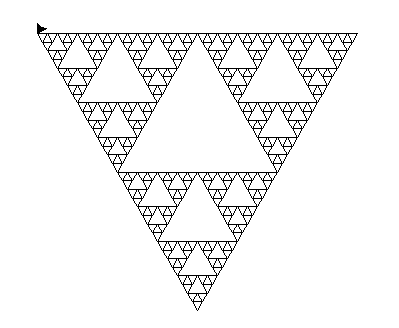
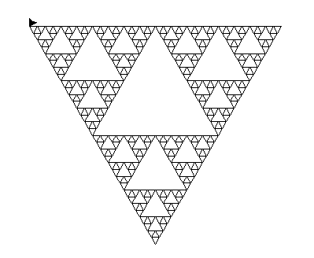

Les fonctions principales de mon progame :
Dessiner permet de tracer une courbe un angle et une longueur données. Elle appelle TriangleSierpinski qui appelle CourbeSierpinski qui appelle RegleSierpinski.
TriangleSierpinski trace le motif initiale en fonction de Niter.
CourbeSierpinski va appeller Niter fois la "regleSierpinski" pour creer la courbe de Sierpinski.
Ce qui ma pris le plus de temps est que j'ai mis du temps à comprendre qu'il fallait appeler la fonction triangleSierpinski dans la fonction dessiner.
J'ai resolu ce probleme en modifiant le code python du TP pour obtenir un flocon complet.
 
